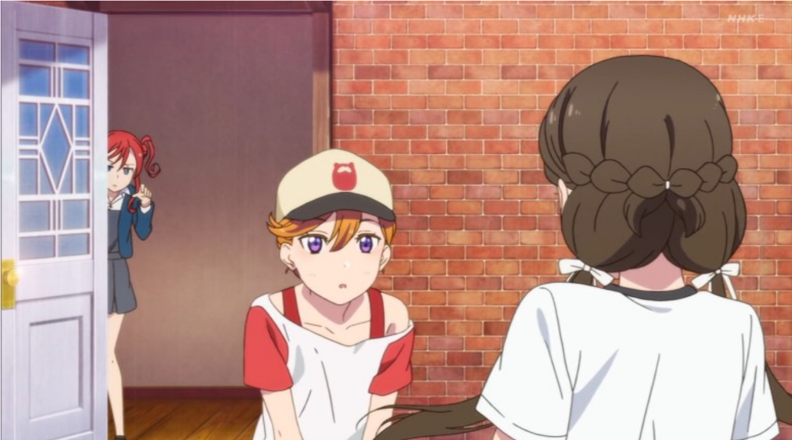
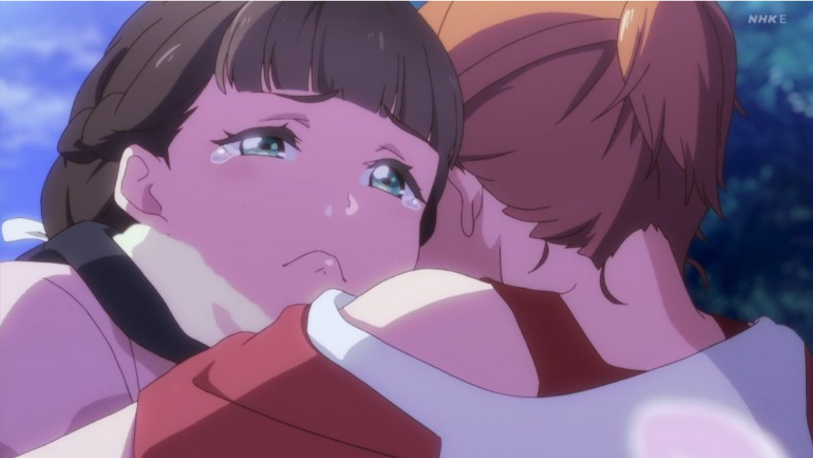
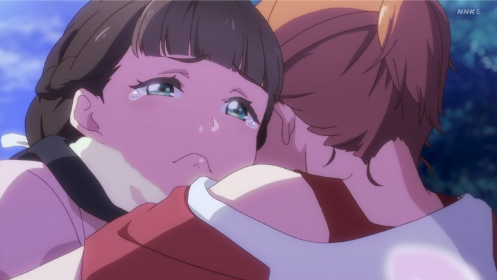
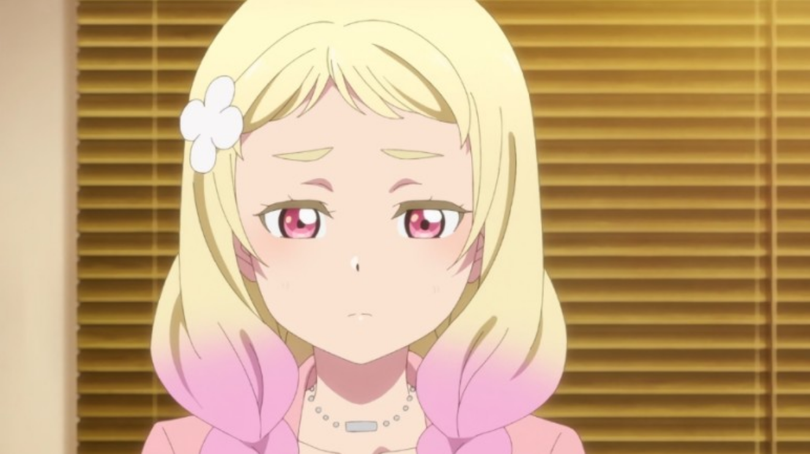
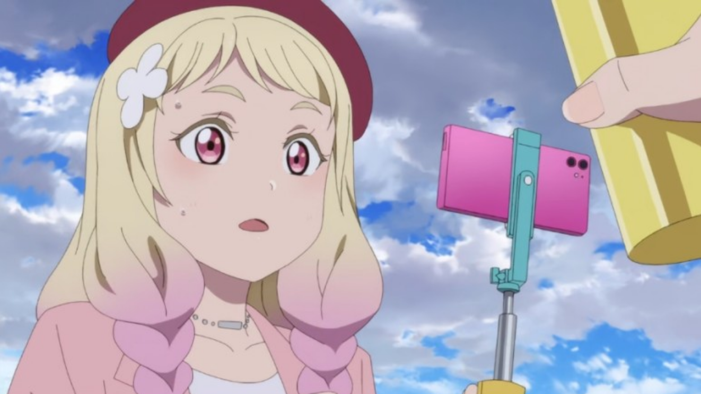
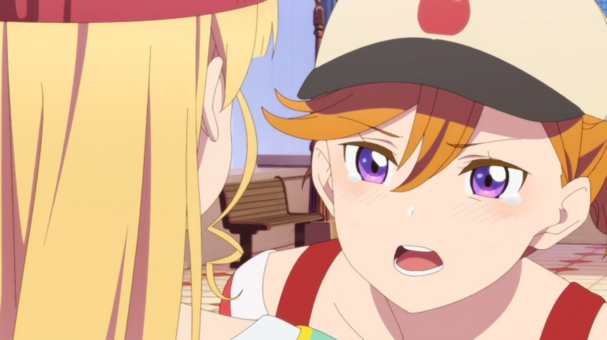
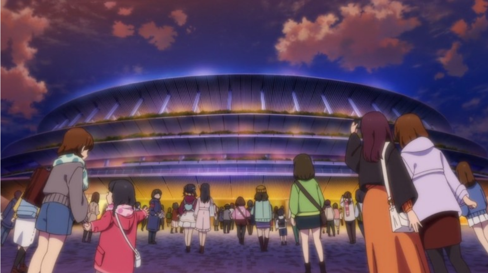
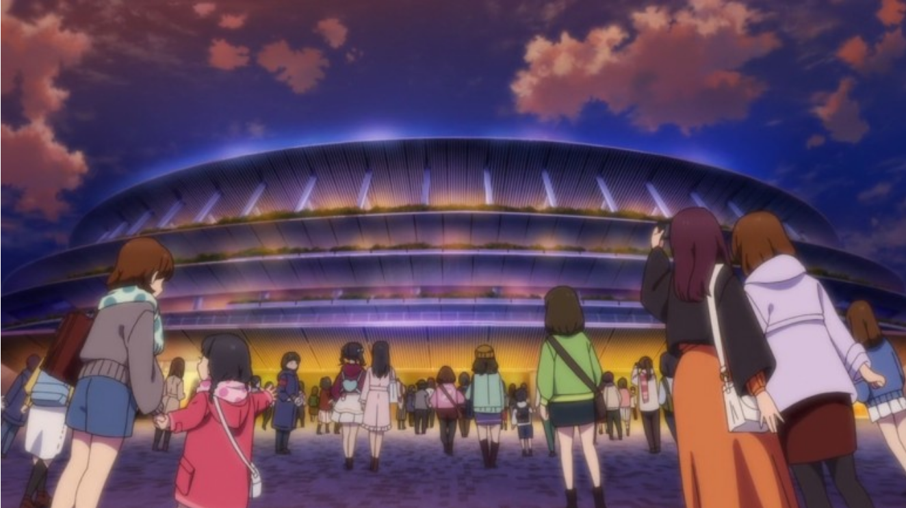

- 書く理由＆ポイント
- 澁谷かのんについて
- 唐可可について
- 可可がかのんに及ぼした影響
- 未来予報ハレルヤ
読む前にもう一度ミニたくなった人👇
💫アニメ1期1話💫💫未来予報ハレルヤ!💫
自分のサイトに感想を書くことになって、最初に何を書くべきかをすごく悩んだ。その結果、自分がLiella!の沼にハマってしまったきっかけになったアニメ1期1話を遅れながらも書いていこうと思った。 もう2年前のことだから内容やキャラクターに関する情報は既に周知だと思っているため、1話に詰まったキャラクター同士で初めての化学反応から生まれる感情と、ここでの話が後にどのように影響を与えたかを察しながら書いていきたい。

ラブライブ！スーパースター!!1期1話はクーカー推しの俺にとって相当意味が深い。Tiny Starsが挿入された1期3話も深い意味を持っているが、それまで話が流れたのは1期1話でその2人の話が始まったからである。 可可がかのんへ持つ感情は、かのんこそが日本でスクールアイドルをするという自分の夢を叶えさせてくれる最も重要な存在であり、憧れてきたスクールアイドルにしてくれるという形の「好き」だと思う。 これは目的のための手段でなく、そもそもスクールアイドルへの好きをそのまま表したのが澁谷かのんであると感じたことであると思う。

澁谷かのんは「歌が大好きな高校生」である。 将来の夢も「歌でみんなを笑顔にすること」であるほどで、かのんは自分の経験や出来事を基に考える性向があり、1話冒頭でもわかるようにかのんの歌は実際他人を笑顔に出来る力を持っている。
かのんは周りの人々に歌唱力も歌声も認められ、他人を楽しませてきた。そして大好きな歌で将来は「歌でみんなを笑顔にすること」であると言えるくらい自分自身への期待値も高くなっていったはずだ。
しかし、実際かのんは小学生の頃からいざという時には歌えない自分を見ながら、散々つらい思いをしてきた。自分がやっていて最も嬉しく感じることを制限され、何もできなくなる自分にガッカリすることが嫌で、結局夢まで諦めようと自分の中で決めたことにまで至るのであった。 そして、もう諦めると決めた直後に可可がかのんの日常に新しい要素として入ってきたのであった。
可可はラブライブで優秀な成績(＝優勝)を収められないと上海に帰らされる。中学生までは厳しく勉強だけさせられた可可にとって、スクールアイドルになるために日本へ留学することは、とても大切な人生一度の願いであったはずだ。 だから決して無駄にしてはいけない上に、普通だったらより長くスクールアイドルをやりたいと思うのが普通だ。

しかし、かのんが歌えないことを知ってからも可可はかのんが歌えるようになるまで待つと言い、一緒にスクールアイドルをやりたいと強く言っていた。

これは後に1期10話でもわかることだが、可可が日本留学で目指していることは「憧れの『スクールアイドル』」ではなく、「『憧れの』スクールアイドル」であると思う。可可はサニーパッションに憧れて日本への留学を決心した。 その楽しく歌いながら踊るスクールアイドルが彼らへ憧れを持つようになったきっかけだと考えている。だから、スクールアイドルになるのではなく、仲間たちと楽しく歌い踊ることを可可はしたいと思っていたのだ。 そして最も楽しく出来ることが可可の最大の目標であり、そのために可可は一瞬だけになろうとも自分が認めた友達とスクールアイドルをしたかったんだと思う。1話で可可がまだ知り合ってばっかのかのんとスクールアイドルをすることに執着したことはそれが一番大きいだろう。

かのんは高校生になるまでに人前で歌えるようになれなかったら、歌の夢を諦めると言っていた。しかし、かのん本人も周りの人からもそれはやって欲しくなく、 1話でちいちゃんから「私はかのんの歌、聞いていたいけどな」と言われたのもそういう気持ちからの言葉である。しかし、かのんはそう言われながらも気持ちを変えることはなかった。


しかし、1話の最後で可可が粘り強く言ってくれたとき、かのんは気持ちを変え自分が好きな歌でみんなを笑顔にさせるという夢を諦めないことにした。 俺はこれに関して、可可がかのんの前に現れたのがこの時点であり、可可が言ったからかのんが夢を諦めないという結果になったのだと思う。

まず、可可がやっぱりかのんとスクールアイドルをしたいとまた手を握りながら頼んできたとき、かのんの気持ちはつい感情的になり、可可の手を振り払う。 その後に、「周りのみんなもガッカリさせちゃうし、何より自分にガッカリする。」「そういうの、もう嫌なの！」と本音を吐く。俺が思うにかのんは、 今まで自分自身も応援してくれた周りのみんなもガッカリさせてきた過去を繰り返したくなくて、その辛さが怖くて夢を諦めようとしていた。 しかし、可可はまだガッカリさせたことがないかのんの人生において新しい登場人物で、短い間に強い勢いでかのんへ応援をしてきた。


かのんは歌と夢を諦めたいと思いつつも、何度も歌が好きであると未練を見せてきた。 そもそも自分が諦めるという選択も「仕方ない」と言いながら、自分がずっと続けてもいい新しい口実を探していたのだと思う。 その証拠として、かのんは可可の手を振り払った後ヘッドフォンをかけて帰ろうとした。

もう有名であるが、初期のかのんにとってヘッドフォンは周囲(=現実)と自分自身を切り離してくれる装置である。 1話の始めに家から出るときも「これで何も聞こえない」というところや12話で変わったかのんにヘッドフォンを忘れたと告げてくれるありあに対し、 もう要らないというかのんの対比は素晴らしい演出だったと思う。
かのんはヘッドフォンをかけ振り向くことで、また現実の複雑な自分の状況から逃げようとしていた。 しかし、ヘッドセットは外部からの音は遮断できるとも、内部の音は遮断ができない。かのんは自分も知らず「いいの？」と自分の口で言ってしまった。 既に新しく知り合った可可の想いがかのんの中に入ってきて「まだ自分に期待して応援してくれる人がいるよ？」という言い訳を養分に大きくなり、かのんの中から溢れ出たと俺は感じた。


そしてここからは気持ちが高まりすぎてぶっちゃけ言語化が難しい…()百聞は一見に如かずとも言うで、 ここからは公式が投稿してくれた動画と歌詞をよく読みながら見た方がわかりやすいと思う。
💫未来予報ハレルヤ!💫- 1~2화 : 1기 12화 이후의 리에라의 방향성
- 3화 : 빈 마르가레테와 현재의 리에라
- 4화 : 시키메이
- 5~6화 : 오니낫츠
- 7화 : 하즈키 렌
- 8화 : 유이가오카(結が丘), 맺을 결(結)
- 9화 : 스미쿠쿠
- 10화 : 예체능 입시에 실패한 오스트리아 출신자
- 11~12화 : 카논과 유학
러브라이브! 슈퍼스타!! 2기 무대 모음 by.애니플러스
OP: We Will!! ep1: Welcome to 우리들의 세계 ep3: Butterfly Wingep3: Go!! Restart ep6: 비타민 SUMMER! ep8: Chance Day, Chance Way!
ep10: Edelstein ep10: Sing! Shine! Smile! ep12: 미래의 소리가 들려
ED: 쫓아가는 꿈의 너머에서
1기에서 써니패션에게 리에라가 지고 나서, 2기에 대한 방향성이 1화 2화에서 소개된다. 첫번째는 카논의 심경 변화에 대한 결과다. 카논은 1기에서 써니패션에게 러브라이브에서 우승하고 싶냐고 물어보고 자기자신은 승패는 관계없이 그저 노래한다는 것 만으로도 만족한다는 의견을 보인 적이 있다. 하지만 1기 12화에서 패배 직후, 분하다는 감정을 토로하며 눈물을 보였고, 1기 마지막에서도 ‘노려라, 러브라이브 우승’ 이라고 화이트 보드에 적어 놓은 것을 보면 패배의 고통을 맛보고 다신 그렇게 되지 않겠다는 강한 다짐을 한 것을 알 수 있다.
그리고 쿠쿠는 1기에서 밝혀진 내용대로, 러브라이브 우승을 못 하게 될 시에는 상하이로 돌아가게 된다라는 떡밥이 남아있었는데, 이 중요한 떡밥은 일단은 ‘우승자가 가장 상대하기 힘들었던 상대’라는 타이틀로 인정을 받았으니 어떻게든 더 남아있을 수 있게 되었다.
그리고 스미레 역시 이를 알고는 2학년이 되어서는 반드시 우승한다라는 다짐을 하고 러브라이브에 임하게 된다. 2기에서는 2기생들이 신입생으로 등장을 하게 되는데, 초반에 가장 중요한 비중을 차지한 게 사쿠라코지 키나코다. 키나코는 홋카이도에서 상경한 시골소녀로, 순수백지 같은 느낌이다. 도쿄에서도 길을 잃었다가 겨우 유이가오카를 찾았는데, 옥상에서의 리에라의 연습소리에 호기심에 조금 보려고 하였다가 들켜버렸다.


키나코는 스쿨아이돌이 뭔지도 몰랐다. 그런데 리에라 1기생 5명의 무대를 보고 조금씩 관심을 가지게 되었고, 1기생(특히 쿠쿠)의 강한 츄라이츄라이로 시작(웰컴 투 보쿠라노 세카이)을 하게 되었다.
ep1: Welcome to 우리들의 세계
하지만 당연히 체력을 포함한 기본적인 것들이 뒤쳐졌고, 대회 우승이라는 빡센 목표를 노려서 아무도 쫄아서 못 들어오던 스쿨 아이돌부는 키나코가 연습에 따라가려고 힘들어하는 모습에 점점 이미지도 하락한다.
그래서 상담 후, 러브라이브 우승을 목표로 하는 것은 내려놓기로 하지만, 그 모습을 보던 메이는 탐탁치 않아한다. 메이는 키나코를 따로 불러 주변의 시선은 신경 쓰지말고, 본인이 하고 싶은 대로 하라고 조언해준다.
키나코 역시 자신이 끌렸던 것은 우승이라는 큰 목표를 두고 열심히 하는 선배들의 모습이었기에 1학년은 자기 혼자가 되더라도 상관없으니 힘들더라도 우승을 목표로 하고 싶다고 한다.
 


작년에 이어서 올해도 개최된 요요기 스쿨아이돌 페스. 작년도 러브라이브 우승자 써니패션이 주목한 라이벌인 우승후보 리에라에게도 참가를 권하는 연락이 왔고, 당연히 1위를 노리고 참가를 하기로 한다. 그런데 카논 앞에 누군가가 나타나고 무작정 노래를 불러보라고(??)하더니 1초만에 못 하냐며 비웃고 사라진다. 그 소녀는 오스트리아에서 온 중학교 3학년 빈 마르가레테이며, 요요기 페스에서 엄청나게 웅장한 무대를 보이며 리에라를 이기고 1위를 가져간다.
리에라는 1위를 못 한 것을 계기로 단체로 풀이 죽어버리지만, 학교 친구들은 리에라를 격려하며 아직 기념패도 거의 없는 신설학교에서 리에라가 가장 뛰어난 슈퍼스타라며 기운을 복돋아준다.
ep3: Butterfly Wing
그리고 그에 대한 보답으로 리에라는 교내에서 라이브를 하게 된다.
ep3: Go!! Restart
1화에서부터 사실 리에라를 계속해서 지켜보던 신입생과 그 신입생을 지켜보는 신입생이 있었는데, 그게 바로 메이와 시키다. 메이는 원래 스쿨아이돌에 빠진 덕후였고 리에라의 팬으로 유이가오카에 입학을 했고, 시키는 메이에게 처음으로 마음을 열었기 때문에 메이와 함께 유이가오카로 입학을 했다.
시키는 메이를 항상 지켜봐왔기 때문에 메이가 스쿨아이돌부에 가길 원했지만, 메이는 자기랑은 어울리지 않는다며 먼저 나서지 못하는 상황이었다. 그래서 시키는 오히려 자기가 먼저 들어가버려 메이를 자극하는 방법을 썼고, 메이가 그 속셈을 눈치채어 오히려 둘이 싸워버리는 결과가 되어버린다.
그 때 카논이 메이에게 다가가 스쿨 아이돌을 권유하고, 메이는 자기가 할 수 있을리 없다며 거절한다. 하지만 카논은 그건 자기가 할 수 없을 거라고 맘대로 단정지은 것일 수도 있다며, 다시 한 번 권유하고, 사실은 시키도 스쿨아이돌에 관심이 있단 것을 알려주어, 둘이 같이 리에라에 들어가게 된다.
오니츠카 나츠미는 꿈이 없다고 한다. 어릴적부터 항상 무언가 꿈을 갖고 살아왔지만, 매번 벽에 부딪히고 결과적으로 자기와는 어울리지 않는다는 결론과 함께 포기를 해오며 살았다.
그래서 가장 현실적으로 자기자신을 위한 방법을 찾기 위해 각종 알바나 투자, 유튜브등을 통해 ‘돈을 많이 벌자’라는 생각하에 나름 갓생을 살아왔다. 그 와중에 라이브를 통해 인기를 얻어 많은 팔로워로부터 주목을 받는 리에라가 완전 달달한 돈 벌이로 보여, 프로듀스라는 이름하에 사실상 컨텐츠를 날로 뽑아 먹는 사기(?)를 치게 된다.
그런데 1기생과 2기생 사이의 아직 격차가 있는 분위기와 1기생의 스미레가 자기를 탐탁치 않게 보는 것을 직감한 나츠미는 2기생들을 꼬드겨 따로 합숙을 진행시키는 것으로 일을 진행시켰다. 그 와중에도 리에라를 돈 뽑을 재원으로만 보고 정을 주지 않았던 나츠미는 점점 자극적인 내용으로 리에라에게 좋지 못 한 자극적인 여론을 만들려 하던 나츠미는 키나코로부터 지금의 꿈에 대해 듣게 되고, 그 꿈이 언젠가 자기가 스쿨아이돌에 관심을 갖게 만든 1기생들의 무대처럼 자기들도 멋있는 퍼포먼스를 선보이는 것이란 것을 안 나츠미는 조금 리에라에 대해 인간적인 생각을 하게 된다.
그리고 뜬금없지만 홋카이도에 출장 간 아버지에게 물건을 전하러 간 카논은 2기생들의 합숙장소로 가게 되고, 나츠미를 몰래 만나 스쿨아이돌이 될 것을 권유하여본다. 나츠미는 처음엔 무슨 소리냐고 물었지만, 카논은 나츠미에게 즉석으로 자기를 따라 춤 춰볼 것을 부탁하고, 나츠미는 2기생들의 연습을 보기만 하며 조금씩 본인도 움직이고 싶었던 감정을 살려 춤을 춰보고는 리에라에 들어가게 된다. 그리고 학교 축제 날 리에라는 9명이 되어 첫 무대를 선보이고, 돈과는 별개로 많은 사람들로부터 환호와 응원을 받는 스쿨아이돌로 활동하는 것이 자신의 새로운 꿈임을 깨닫는다.
ep6: 비타민 SUMMER!
렌은 나츠미가 촬영하는 리에라의 휴식 컨텐츠로 처음 게임을 접했다. 지금까지는 그저 할 일만 해오던 렌이라 게임이 뭔지도 몰랐지만, 그 때 재능에 눈 떠버렸고 집에서도 마침 아버지가 보내오는 게임기를 통해 게임에 점점 빠지게 된다.
원래 혼자서 모든 학생회 일과 작곡을 도맡아 하면서 하루를 보내었다. 그런데 게임에 한 번 빠지면 몇 시간이고 정신을 못 차리니 수면이 부족해져서 연습 도중에도 졸아버리는 상태에 달하고, 우연히 메이에게 그 상태를 들키게 된다.
렌은 메이에게만 몰래 말해주고 게임기가 있는 방의 열쇠를 맡겼을 정도였으나 결국 다른 멤버들에게 렌은 사실대로 말하기로 하고 열쇠를 돌려 받는다. 사실 리에라의 멤버들은 최근 렌이 학생회 일을 혼자 하는 것 때문에 과로로 점점 힘들어 하는 것으로 알고 있었기 때문에, 렌을 도와 같이 게임을 클리어해주고 학생회의 개편을 하기로 했다.
하즈키 렌이 혼자 도맡아하던 학생회 일을 덜어주기 위해, 시부야 카논이 부회장, 사쿠라코지 키나코가 서기로 임명되었다. 그리고 학교의 오픈 캠퍼스가 열리고 여러 학생들이 유이가오카에 방문하게 되었다. 거기에는 카논의 여동생 아리아도 있었고, 유이가오카의 역사 부분을 보다가 어째서 오모테산도에 학교를 세우게 되었는지를 묻는다.
하즈키 렌이 혼자 도맡아하던 학생회 일을 덜어주기 위해, 시부야 카논이 부회장, 사쿠라코지 키나코가 서기로 임명되었다. 그리고 학교의 오픈 캠퍼스가 열리고 여러 학생들이 유이가오카에 방문하게 되었다. 거기에는 카논의 여동생 아리아도 있었고, 유이가오카의 역사 부분을 보다가 어째서 오모테산도에 학교를 세우게 되었는지를 묻는다.
ep8: Chance Day, Chance Way!
요약에는 적어두지 않았지만, 사실 1화에서부터 쿠쿠는 1기이상으로 스미레에게 시비를 털었다(…). 단순히 놀리는 것이 아니라 스미레가 말하는 거에만 태클을 걸고 짜증을 내고 꼽을 줬다(……….). 2기에서 스미레 성격이 보살이 되어서 사실 쿠쿠와 계속 잘 지내주고 있는 게 아닌가 싶을 정도로 도가 지나쳤었다. 내가 엄청난 스미레 오시였으면 많이 슬펐을 듯.
아무튼 9화에서는 좀 많은 일들이 있었다. 일단 러브라이브 예선에서 리에라는 통과를 했지만 써니패션이 떨어져버리는 일이 발생했다. 이유는 빈 마르가레테와 대결한 써니 패션이 져버렸기 때문. 그래서 다음은 도쿄 예선은 1기에서 리에라가 써니 패션에게 졌던 무대였고, 리에라를 이긴 써니패션을 이긴 빈 마르가레테를 다시 리에라가 이겨야 하는 상황이 온 것이다.
여기서 스미레는 가장 먼저 쿠쿠를 걱정한다. 작중에서는 아직 1기생과 2기생의 실력차이가 존재하였기에, 1기생 5명은 2기생들의 연습을 좀 더 빡세게 굴리자는 의견이 나오게 되고, 쿠쿠는 되려 그러면 즐겁지 않게 된다며 반대하고 스미레는 쿠쿠에게 자기 사정을 좀 생각하라고 하지만, 쿠쿠는 외면하고 돌아간다.
쿠쿠는 자기 사정을 말했다가는 모두가 자기를 신경 써서 쿠쿠를 우선시할 것이 뻔했고, 그런 방향성을 원치 않았기에 말을 하지 않았다. 그리고 다음 집합 때, 치사토는 2기생들의 연습에 새로운 매뉴얼을 짜왔고, 좀 더 연습량을 늘릴 것이라고 말하려는데 스미레가 말을 꺼낸다.
스미레는 다음 도쿄 예선 때는 2기생을 빼고 1기생 5명이서만 나가기를 원한다고 했다. 규정상 갑작스런 추가 멤버는 불가지만 잠깐의 결원은 가능하다고 2기생들을 한 번 빼고 가자고 했다. 카논은 그 말을 듣고 놀라 스미레에게 어째서 그런 말을 하냐고 했고, 쿠쿠가 자기 사정을 숨겨달라고 하였기에, 스미레는 악당을 자처하는 이유를 둘러댔다. 자기는 러브라이브에서 받는 주목으로 연예계에 하루빨리 주목 받고 싶다고 했고, 카논은 그 말을 듣고 빡돌아서 스미레 뺨을 때리려했다. 하지만 쿠쿠가 그 전에 말리고 스미레는 그 자리를 떠났다.
너무 명연기였으니 봐주셈

신사일을 돕던 스미레에게 2기생들이 찾아왔고, 2기생들은 선배들이 항상 바라보던 러브라이브 우승을 위해 한 번 무대에서 빠지겠다는 합의를 했다고 전했다. 하지만 스미레 역시 함께 연습을 한 정도 있으니 9명이서 무대에서 서고 싶었고 그 자리에서 미안한 마음에 많이 약한 모습을 보인다.
그 때 스미레의 설득을 위해 대표로 쿠쿠가 왔고, 쿠쿠는 스미레에게 자기는 스쿨아이돌을 하고 싶어 일본에 왔지만, 자기가 하고 싶은 스쿨아이돌은 모두 즐겁게 할 수 있는 것이라며 9명이서 무대에 서야 그 의미가 있음을 말해준다. 스미레는 그 말을 듣더니 잠깐 신사안에 들어가 1기에서 쿠쿠에게 받은 티아라를 보여준다.
스미레는 예능 활동에 있어서 매번 주역으로 인정받지 못하였기에 처음으로 자기를 센터로 인정해주고 밀어준 쿠쿠에게 항상 고마운 마음을 갖고 있었다고 했다. 그래서 스미레는 쿠쿠와 더 오래 같이 있고 싶었고, 그런 쿠쿠가 상하이에 돌아가버리는 것이 너무 싫다고 하며 눈물을 터뜨렸고 서로가 지금까지 터놓지 않았던 진심을 털게 되고, 9명이서 무대에서 올라가는 것으로 결론이 난다.
도쿄 예선이 다가오고 리에라는 키나코네 집으로 이번엔 9명이서 합숙을 가게 된다. 합숙에서는 2기생들이 특기로 갖는 부분을 1기생들이 나눠서 담당하며 도쿄 본선 전 온라인 소개 영상을 준비했다.
도쿄 예선이 다가오고 리에라는 키나코네 집으로 이번엔 9명이서 합숙을 가게 된다. 합숙에서는 2기생들이 특기로 갖는 부분을 1기생들이 나눠서 담당하며 도쿄 본선 전 온라인 소개 영상을 준비했다.
리에라의 전에는 빈의 무대가 있었고, 빈은 다시 한 번 시부야 카논에게 진짜 노래가 뭔지 보여주겠다는 말을 하고 무대에 선다.
ep10: Edelstein
ep10: Sing! Shine! Smile!
1위만 본선에 진출이 가능한 도쿄 예선에서의 1등은 리에라였다. 빈은 결과에 이해를 못 하지만, 사실 소개 영상에서 보인 거만한 태도가 한 몫하였고 카논은 빈에게 결과에 승복하라고 한 마디를 한다.
위와 같은 태도 때문에 빈의 정보가 여러모로 풀렸고 카논은 우연히 빈의 SNS와 정보를 듣게 된다. 빈은 오스트리아의 명문 음악학교에 진학하려다 실패한 것을 알았고 자기가 음악과에 떨어진 것과 겹쳐서 빈을 보게 된다. 카논은 빈이 올린 SNS 사진에서 위치가 근처임을 알고 그곳에 찾아간다. 카논은 입시 얘기를 꺼내었고, 빈은 그거랑은 레벨이 다르다고 성질을 부리려다 사정을 카논에게 털게 된다. 자기 집안은 이름 있는 음악가 집안이며, 입시에 떨어졌지만 자기가 러브라이브에서 우승을 하면 부모님께 추천을 받아 입학을 할 수도 있게 되는 상황이었다.
며칠 뒤, 카논은 이사장의 호출을 받고 그 명문 음악학교에서 유학 제안이 왔음을 듣고 다른 멤버들은 밖에서 그 이야기를 엿들어서 알게 되었고, 그날 밤 빈은 카논을 찾아가 카논과 함께라는 조건하에선 입학이 가능해졌다는 얘기를 듣게 된다. 하지만 카논은 이를 거절하고 자기가 노래에 자신감을 갖게 되고 정든 유이가오카와 리에라에 남기로 한다.
치사토는 빈의 얘기까지 알고 있었기에 모두의 앞에서 카논이 유학을 가주었으면 한다고 한다. 물론 카논이 떠나는 건 싫지만, 옛날부터 카논의 꿈은 전 세계에 자기 노랫소리를 퍼뜨리는 것이었기에 가장 좋은 찬스가 지금 와 있다며 눈물을 흘리면서 유학을 가달라고 한다.
다른 멤버들도 의견이 여러가지로 분산되어 있었지만, 일단 러브라이브 결승이 남았기에 연습에 몰두하게 된다. 카논은 그래도 사실 유학 자체가 끌리진 않았기에 심적으로 고민을 하게 된다. 그러던 중 빈이 카논을 찾아와, 만약 그 명문학교에서 유이가오카의 학생을 유학생으로 들인 소식이 퍼지면, 유이가오카와 리에라도 더욱 주목 받을 것이고 모두에게도 좋은 일이 된다는 말을 해주며, 떄마침 다른 멤버들로부터도 응원을 받으며 유학을 갈 것을 결심하게 된다.
그리고 러브라이브 결승을 위해 남은 시간들을 보내게 된다. 그리고 그 해 러브라이브의 우승자는 리에라가 되었고, 항상 하고 싶은 일에서 벽만 느끼던 나츠미는 처음으로 1등을 타게 된다.
ep12: 미래의 소리가 들려
 

하
근데 이제 마무리 잘하고 집에 돌아가 출국 준비를 하려는 카논 앞에 빈이 유이가오카 교복을 입고 나타난다. 카논의 집에는 오스트리아에서 우편이 하나 도착했고, 빈은 카논의 앞에서 유학은 중지되었다고 전한다. 그리고 끝남……..